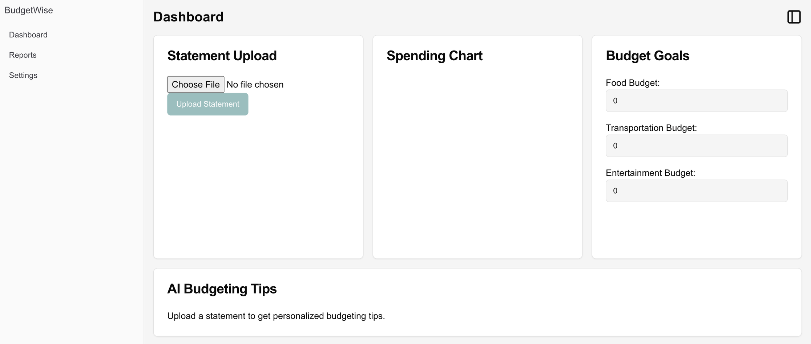

I'll start by saying that I am not a developer. Well, technically I started my career some 25 years ago writing Visual Basic, Java and JSP code but that was a long time ago. For the last 20+ years I have been coding adjacent and every role has taken me further away from coding. That being said, while I cannot write code anymore, I could look at a snippet of code and decipher what it is trying to do. I'm also very proficient using low code / no code tools to write little scripts. Whether it was doing Tableau analysis (calculated fields) or configuring business processes using Fuego or lately using tools like AnyQuest and Agent.ai to build agents, I feel very comfortable solving business problems with these products.
That being said, there is so much talk about tools like Replit, Cursor and Lovable and how easy it is to build applications using these tools that I keep asking myself - should this be something I should do? Can I tackle many more use cases if I started building my own applications? Add to this all the hype about Vibe Coding and finally I decided to take a shot at building an application.
Some more backstory - I have used ChatGPT to generate code that I have deployed via Netlify (this was a tax calculator application) but these were simpler applications and for all practical purposes I was deploying a single code file. I had written about this here. What I was curious about was if I could actually generate a full application.
Google recently came out with Firebase Studio and I decided to give it a shot. It markets itself as a prompt based application builder and it combines both the application code generation and LLM calls. So I can build an AI application from scratch.
I decided to build an expense tracker app that takes a credit card statement as input and then it will analyze and categorize and analyze all the data. Seems simple enough. So I gave Firebase Studio my prompt (you can see this below).
It then generates a bunch of code and I was quite excited. It generated a simple UI where I can upload a statement and then it is supposed to generate the analysis. You can see the structure of the application.

When I tried to run it I got 1 error -
Unhandled Runtime Error Hydration failed because the server rendered HTML didn't match the client. As a result this tree will be regenerated on the client. This can happen if a SSR-ed Client Component used: - A server/client branch if (typeof window !== 'undefined'). - Variable input such as Date.now() or Math.random() which changes each time it's called. - Date formatting in a user's locale which doesn't match the server. - External changing data without sending a snapshot of it along with the HTML. - Invalid HTML tag nesting. It can also happen if the client has a browser extension installed which messes with the HTML before React loaded. See more info here: https://nextjs.org/docs/messages/react-hydration-error
I feel very lucky that it did not work the first time, as it quickly highlighted what I see as the biggest challenge of vibe coding. It takes the LLM 5 mins to generate a full web application and all the code. Here is what Firebase Studio generated -

For a non-developer this is pretty daunting. So many folders and files and I have no clue what each of these does. So I uploaded this to Claude and asked it to explain this to me and this is what it had to say.
With this new found knowledge and feeling a bit more confident, I went to the src/ folder and felt my confidence disappearing. There were a lot of files here and I did some quick back of the napkin math and there was definitely over 1500 lines of code.

At this point, I decided to stop. What is obvious to me is that like everything else in AI, it is extremely useful to an expert but extremely dangerous in the hands of a novice. It reminds me of this quote from Ethan Mollick in his recent post -
It just does things. (Of course, that makes checking its work even harder, especially for non-experts.)
It also reminds me of all the memes around vibe coding. If I go back to my coding days, the one thing I never enjoyed was going through someone else's codebase to figure out how it worked and where the bugs were. Now I feel like programmers will be reviewing the code generated by AI (and AI is prodigious in its ability to generate code) and try and debug it. I assume they will use AI to debug the code, but there is going to be so much black box code that no one will have any idea about that we could have other unintended consequences.
So what did I learn -